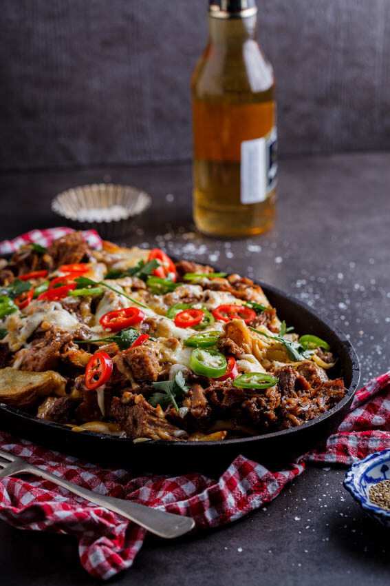
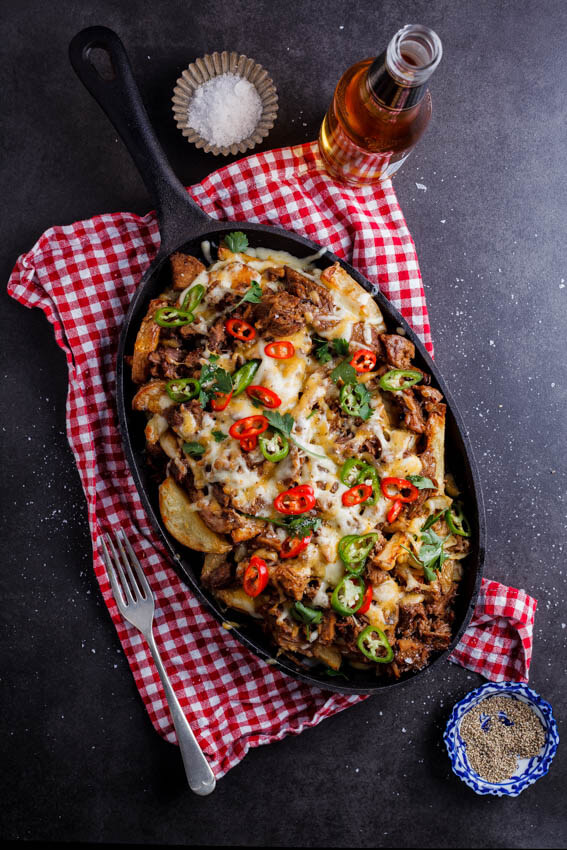

Pulled pork loaded fries

Description
Instant crowd pleasing Pulled pork loaded fries.
Perfectly made for an easy going lunch serving.
Its Cheesy and meaty, what more could you want?
Ingredients
This loaded French fries recipe couldn’t be simpler and requires only a few ingredients.
I often freeze leftover pulled pork to use in this recipe but even store-bought pulled pork will work well.
I made my own oven baked fries but you can use frozen fries too.
- Leftover pulled pork.
- Potatoes.
- Olive oil.
- Salt
- Cheese.
- I used a combination of mozzarella and cheddar cheese but any good melting cheese like Gouda,
Provolone, Gruyere, etc. will be delicious.
- Garnish.
- These are optional. Chopped parsley, sliced green onions/spring onions, fresh chillies.
How to make loaded fries
-
Make the fries:
Slice large potatoes into chunky fries then place onto a large sheet pan or baking sheet.
Drizzle with a few tablespoons of olive oil and season generously with salt.
Place in a hot oven and allow to cook for 30-45 minutes until golden brown and crisp. You can make the fries in an air fryer too.
-
Assemble loaded fries:
Remove the crispy French fries from the oven then top with pulled pork and grated or shredded cheese and chillies.
You can assemble the fries in a cast iron skillet or oven-safe serving platter too.
Place back in the oven and allow to cook until the cheese has melted, approximately 10 minutes, then remove from the oven.
Garnish with chillies, spring onions and parsley and serve immediately.
What else can I add?
Other topping ideas include cheese sauce, crispy bacon, ground beef or taco meat, baked beans, corn or sautéed mushrooms.
Toppings to add once the loaded fries come out of the oven include guacamole, salsa, chopped tomatoes, sour cream, ranch dressing and pickled jalapeños.
